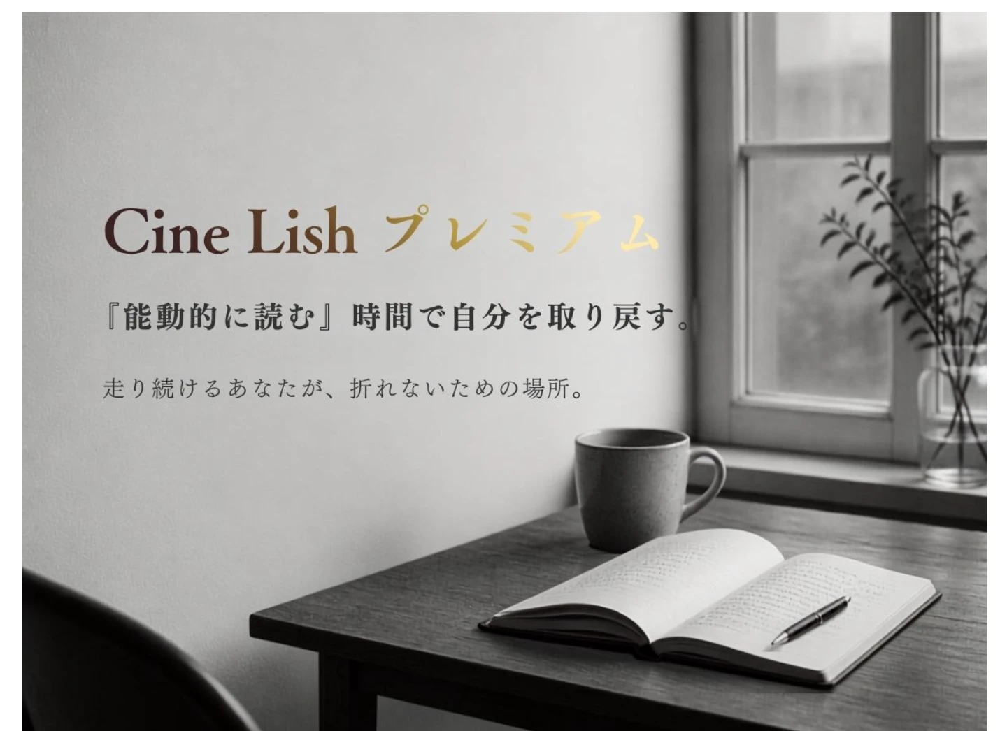

NOW SHOWING
Prologue
忙しい毎日の中で、自分自身を
見失っていませんか。
日々、自分の一日の行動に納得できていますか？
CineLish プレミアム会員
SCENE 01Passive / Active
時間が、
溶けていませんか。
夢を追っているはずなのに、
気づけば動画やSNSのリールを流し見して、
時間が溶けていた…。
Passive
受け身で眺める流れてくるものを、ただ眺めるだけの時間。あとに何も残らないことが多い。
Active
能動的に読む自分の意思で読み、考える時間。人が本来の力を発揮するのは、この瞬間です。

人が本来力を発揮するのは、
自分の意思で、能動的に
行動しているときです。
Concept
あえて、
文章を能動的に読む
体験を。
CineLishプレミアムは、
あえて「文章を能動的に読む体験」を
提供する場所です。
映画や日々の話をきっかけに、
自分のペースで読み、考え、
自分に立ち返る。
その時間が、流し見では得られないものを残し、
夢を追うあなたが前を向くきっかけになります。
夢の途中で立ち止まりたくなったときにこそ、
ぴったりの場所です。
SCENE 02What you receive
CineLish プレミアムで
受け取れるもの
-
01
月3〜4本、映画編集者Shuyaの
気づきと発見を深めるエッセイ映画や日常から生まれた、余韻に浸る言葉と想い。
-
02
「能動的に読む」体験と、
自分に還る時間動画の流し見ではなく、自分のペースで読み、考える時間を。
-
03
夢の途中で立ち止まりたくなったときに、
戻ってこられる場所走り続けて自分を見失いそうなとき、ここに戻れば、また自分を取り戻せる。
-
04
会員向けのキャンペーン・イベント・
コミュニティ企画今後、会員の皆さまに向けた企画も予定しています。
Ticket
ADMIT ONENo. 0500
Cine Lishプレミアム
¥500／月
MONTHLY MEMBERSHIP
Epilogue
走り続けて自分を見失いそうなとき、
ここに戻ってくれば、
また自分を取り戻せる。
そんな余白のような場所で
ありたいと思っています。
余韻に還り、夢を思い出す。
走り続けるあなたが、
折れないための場所。
あなたを待っています。
月額500円・いつでも解約OK
Fin.